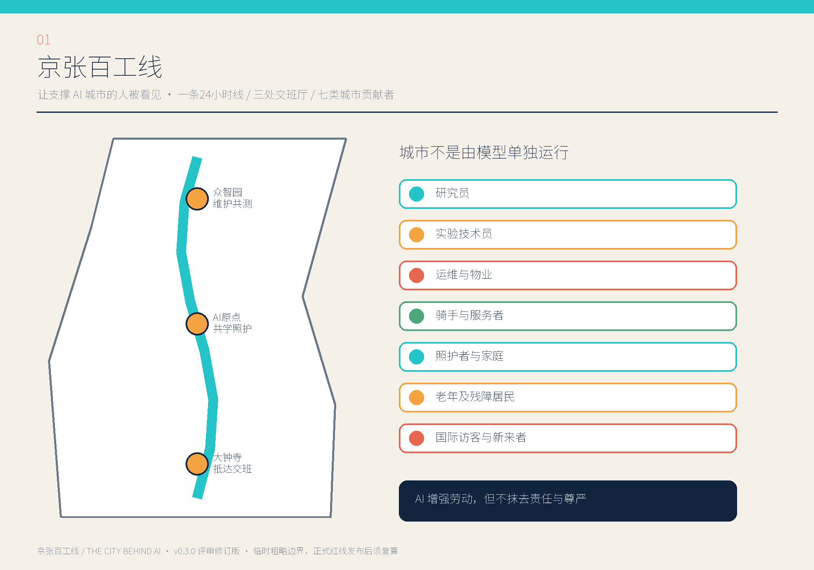
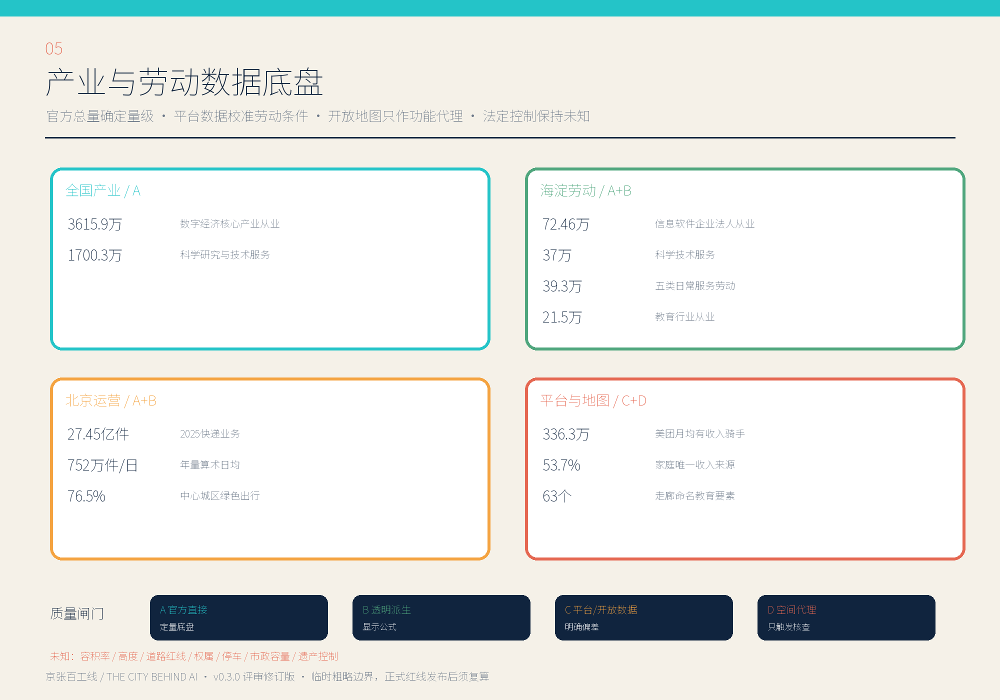
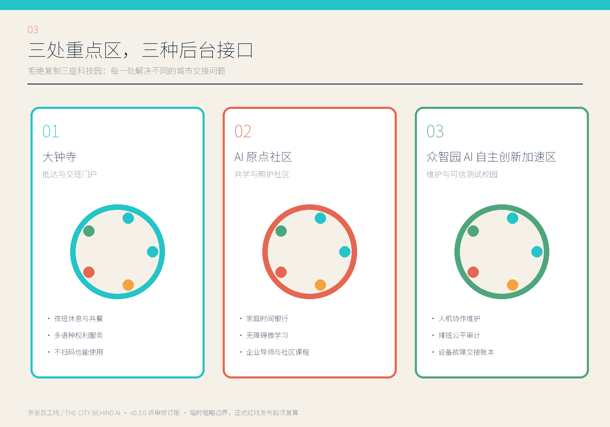
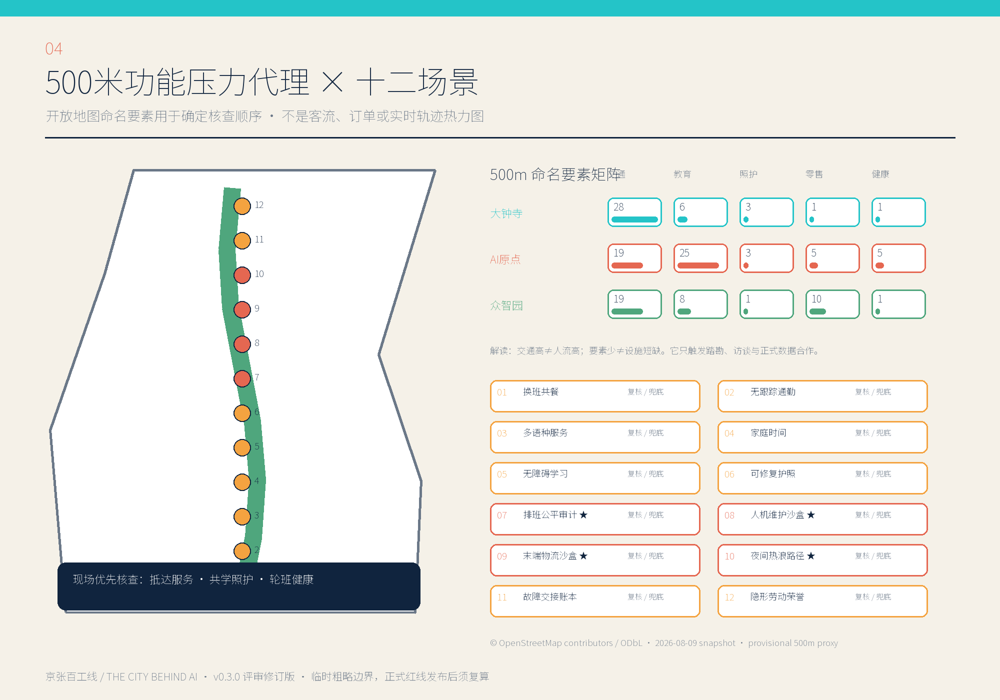
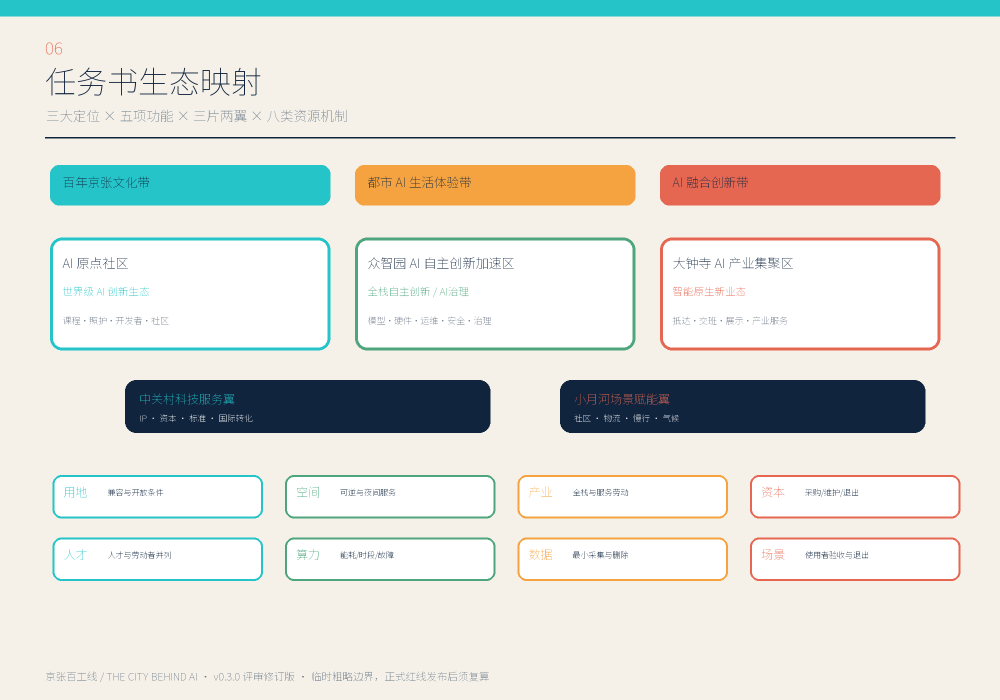
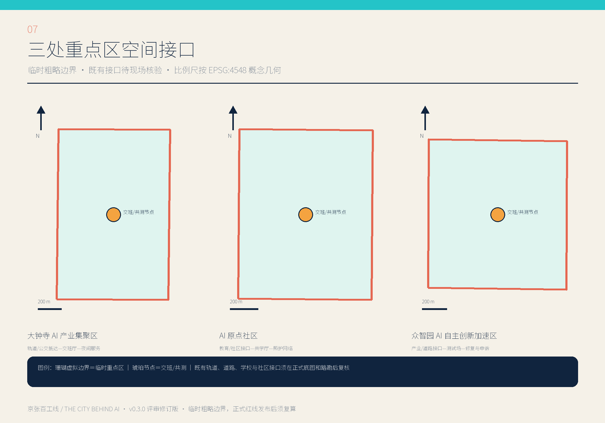
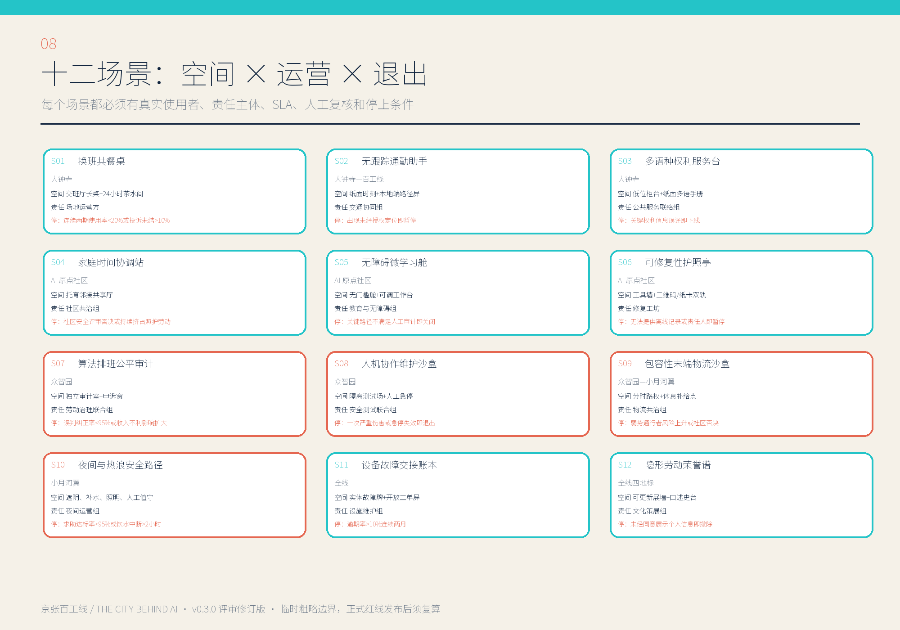
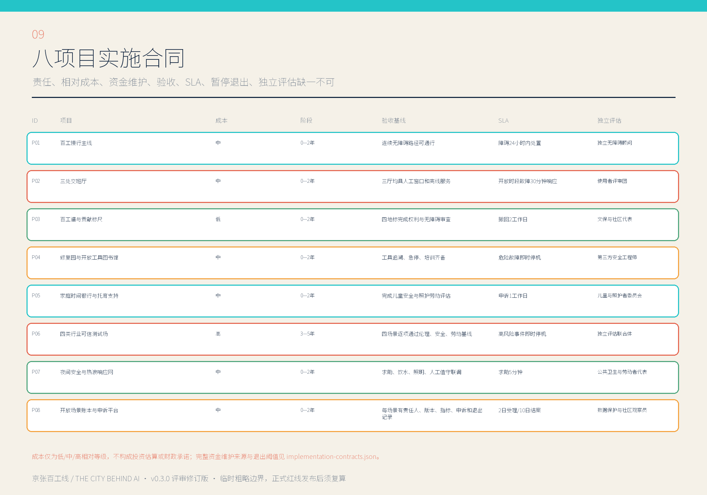
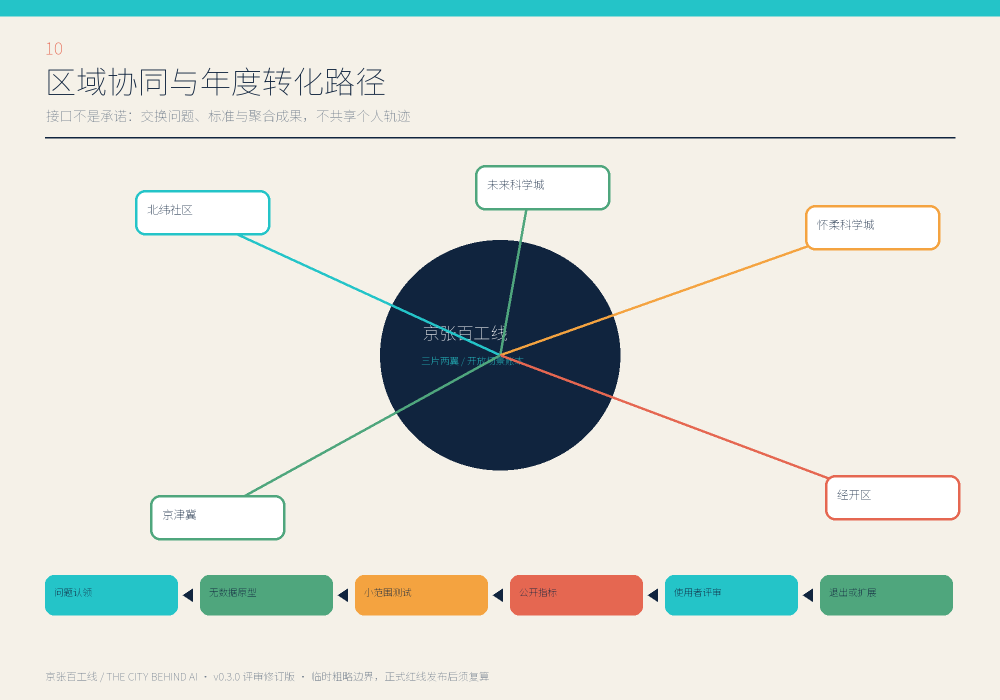

统筹研究
43.6 km²
产业、人才、劳动、通勤、照护与基础设施链。
让支撑 AI 城市的人被看见。用官方产业统计、劳动条件数据和开放地图功能代理，把研究、实验、运维、物流、服务与照护组织成可见、可交接、可验证的城市后台。

产业、人才、劳动、通勤、照护与基础设施链。
一线、三班、两翼与八条交接支线。
抵达交班、共学照护、维护共测。
2023数字经济核心产业法人单位从业人员
2023企业法人单位从业人员
五类法人单位从业人员透明加总
教育行业法人单位从业人员
全国、北京市和海淀区统计只用于确定问题量级，不下推到临时地块；不同法人单位口径不直接混加。


| 重点区 | 交通 | 教育 | 照护支持 | 日常零售 | 健康 | 设计响应 |
|---|---|---|---|---|---|---|
| 大钟寺 | 28 | 6 | 3 | 1 | 1 | 抵达、夜间交班、补水与多语服务 |
| AI原点 | 19 | 25 | 3 | 5 | 5 | 学校—家庭—社区共学照护 |
| 众智园 | 19 | 8 | 1 | 10 | 1 | 轮班健康、维修工具与人工申诉 |

研发、可信测试、开放工具与维护学习。
慢行、气候适应、修复教育与公共交班。
托育、家庭时间、无障碍学习和生活支持。

| 等级 | 资料 | 允许用途 | 禁止推断 |
|---|---|---|---|
| A | 国家统计局、海淀、北京政府公开统计 | 确定产业与服务量级 | 地块人数、实时流量 |
| B | 官方总量透明加总或日均换算 | 运营压力背景 | 具体时段峰值 |
| C | 平台报告、开放地图 | 劳动条件与功能环境校准 | 全行业或本地代表性 |
| D | 500米功能压力代理 | 安排踏勘与访谈优先级 | 客流、订单、轨迹热力 |
场景节点
概念绿脊比例
三处交班厅公共空间
| 模块 | 输出 | 检查 |
|---|---|---|
| 空间与建筑 | 九个 GeoJSON 图层、十二个概念建筑原型 | 边界、拓扑、面积复算；高度与规模保持未知 |
| 场景 | 十二张卡、四类行业共测 | 人工复核、非数字兜底、退出机制 |
| 实施 | 八项目、三阶段、四项年度事件 | 责任人、维护费、触发条件 |
| 证据与假设 | 官方统计、平台报告、开放地图 | 地域、时间、许可、变换、局限与待确认假设 |
产业人口依据国家统计局、海淀区统计公报；交通物流依据北京市交通委员会、北京市邮政管理局和交通运输部；骑手数据来自美团平台年度报告；功能环境采用 2026-08-09 OpenStreetMap/Overpass 快照。

早期“中关村智造大街”为工作名，本版统一采用正式名称“众智园 AI 自主创新加速区”。



